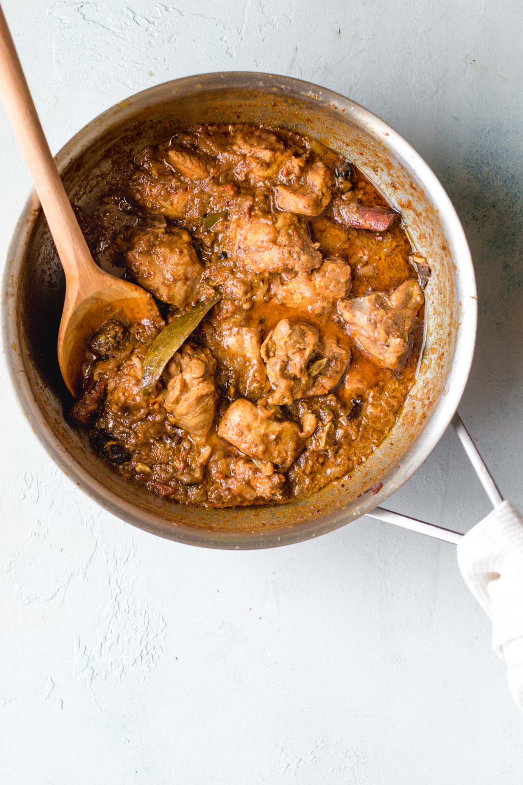
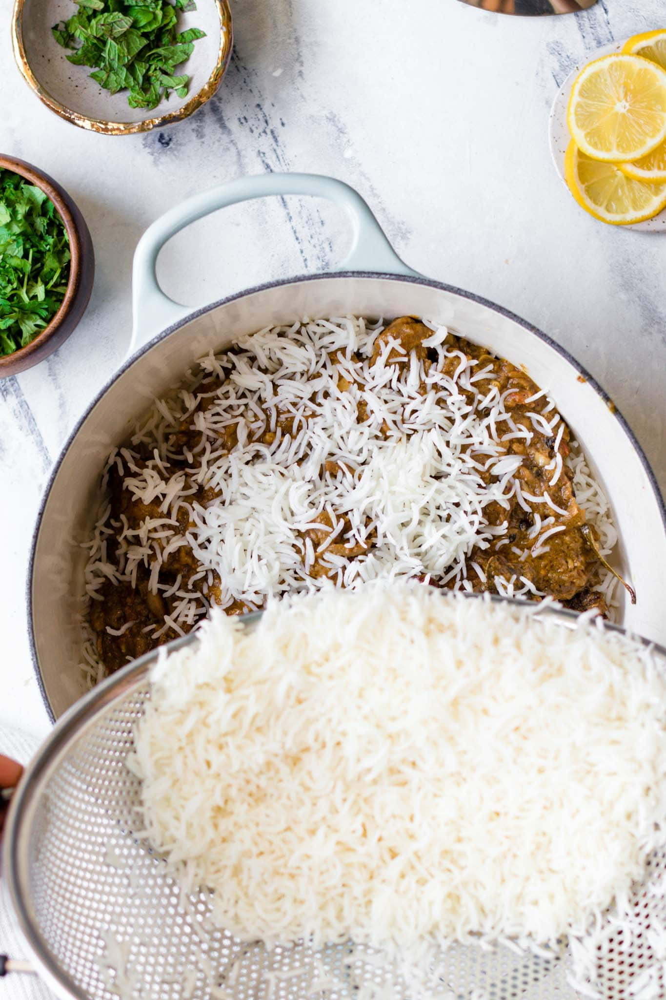

BIRYANI RECIPE:
WHAT IS BIRYANI?
Biryani is an intricate rice dish made with layers of curried meat and rice.Given its use of adornments and
luxurious finishes, it’s no surprise that biryani has roots in Persian cuisine.
There are two main methods of making biryani:
- (raw) biryani, made with raw meat and parboiled rice and cooked together, and
- (cooked) biryani, in which cooked meat and parboiled rice are steamed together.
In Pakistan, pakki (or cooked) biryani is most common, with several prominent varieties such as Sindhi,
Karachi-style, and Bombay biryani. This recipe is an amalgamation of these styles and is similar to what you’d
find at a typical Pakistani or Indian restaurant or dinner party.
NOTES ON THE INGREDIENTS FOR CHICKEN BIRYANI

I’ve intentionally chosen the ingredients and quantities to give this biryani a strong foundation.That said, this
recipe can take quite a bit of substitutions and adaptations and still be excellent.
- Oil/Ghee: I’ve used oil for fluidity and ghee for taste.
- Onions: You can either thinly slice them (more traditional) or finely chop. If using a food processor
to do this, pulse to chop so that it doesn’t blend into a paste.
- Bone-in, cut up, skinless chicken: I buy pre-cut up pieces of a whole chicken, but bone-in chicken
thighs work too. You can also use boneless chicken, though it may require a shorter cooking time.
- Whole spices: A generous amount of whole spices are a distinct characteristic of biryani. Whole
spices are meant to be discarded while eating, but if you don’t want to bite into them, feel free place them
in a spice/muslin bag.
- Garlic + Ginger: I’ve given their quantities in whole form and tablespoons. I use a mortar and pestle
or a food processor to crush them.
- Tomatoes: Since biryani has lots of sour ingredients like yogurt, dried plums (alu Bukhara), and
lemon, I’ve found keeping the tomatoes to a minimum gives it just the right amount of tang.
- Yogurt: Not only does a yogurt marinade make the chicken more tender and flavorful, but it also makes
cooking the biryani much smoother. For a dairy-free option, try using coconut milk.
- Rice: I suggest using aged, long-grain basmati rice you can find at some grocery stores, any
Indian/Pakistani specialty store, or online
- Dried Plums (Alu Bukhara): I always cherish the helping of biryani with these sweet surprises. Alu
Bukhara are often used in biryani to give a sweet, tangy taste. They’re usually available at South Asian
grocery stores, but if you can’t find them, you can either substitute with dried prunes or omit.
HOW TO MAKE CHICKEN BIRYANI – 3 MAIN STEPS
I believe this recipe is as easy as an authentic biryani recipe can be – no superfluous or tedious steps that
don’t contribute to big flavor. You’ll find that while it takes time, most of it is passive cooking time. And
the end result is quite rewarding and impressive. These are 3 parts to making chicken biryani:
- Step 1: Prepare the chicken curry.
Prepare the biryani masala (or use store-bought) and marinate the chicken.
Cook the chicken curry. While it’s cooking over low heat, prepare the rice.

- Step 2: Parboil the rice.
Bring a pot of water to a boil and parboil the rice. Drain and set aside.

- Step 3: Bring it all together for a final steam (‘dum‘).
Layer half of the rice, all of the chicken, and then the remaining rice on top. Add the finishing touches.
Allow steam to develop, then lower the heat and let the flavors meld.

BIRYANI MASALA
Pakistani biryani is heavy on spice (and flavor!), and is often made with biryani masala, or simply put, a medley
of spices that come together to give it a distinct, masaledar (or spice-laden) taste.
I recommend you use the biryani masala recipe below (all you need is a good spice grinder and a few extra whole
spices). If you’d prefer not to, you can substitute your favorite store-bought biryani masala. This recipe has
been tested and works great with Bombay Biryani Masala.
- To make Biryani masala for this recipe, combine the following ingredients in a spice grinder and
process until mostly smooth. Makes ~2 tbsp, which is the exact quantity you’ll need for this recipe.
- 1 medium dried bay leaf (tez patta)
- 2 dried button red chili peppers (sukhi lal mirch)
- 1 small whole mace (javetri)
- 1 2-inch cinnamon stick (daarchini)
- 4-5 whole cloves (loung)
- 1 black cardamom (badi elaichi)
- 1 star anise (baadiyan)
- 3-4 green cardamom pods (elaichi)
- 1 tsp roasted cumin seeds or black cumin seeds (shahzeera)
- 1/2 tsp black peppercorns (kaali mirch)
- 1/4 tsp fennel (saunf)
- 1/4 tsp carom seeds (ajwain)
Note: You don’t have to have every single one of these spices to make a
wonderful biryani. Don’t
worry if you’re missing some – it’ll still give your biryani exceptional flavor!